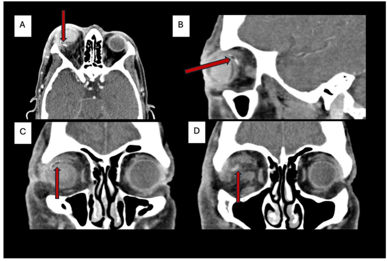
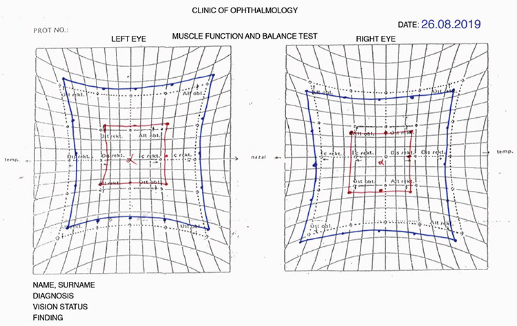

3219 — Song thị và hạn chế vận nhãn sau đặt van/ống lọc glôcôm: bản van ép cơ, bao xơ co kéo, hay van di lệch? / Diplopia and motility restriction after glaucoma drainage device
Tags: pattern:nhin-doi pattern:han-che-van-nhan pattern:lech-truc pattern:ha-nhan-cau pattern:loi-mat vung:mat vung:hoc-mat vung:co-van-nhan anatomy:co-truc-tren anatomy:co-truc-ngoai anatomy:co-truc-duoi anatomy:ban-van protocol:CT-hoc-mat protocol:MRI-hoc-mat protocol:luoi-9-huong-nhin protocol:forced-duction score:PD score:goc-SR-LR incidentaloma:ban-van-glaucoma
Mức chắc chắn (certainty): tổng hợp y văn (literature synthesis) — ghép đoàn hệ 9.614 bệnh nhân ghép cặp (van dẫn lưu so với không đặt van; Can J Ophthalmol 2026, PMID 42722340), 211 mắt van Ahmed (Turk J Ophthalmol 2021, PMC7931660), 977 mắt van Molteno (J Binocul Vis Ocul Motil 2020, PMID 32186470), 705 ca mổ glôcôm (PLoS One 2025, PMC12574868), nghiên cứu MRI hốc mắt 7 mắt (PMID 34058906), 27 mắt MRI bản van (PMC4671622), 36 mắt MRI bọng van (PMID 37066864), 9 ca mổ lác sau van (PMID 18413516), ca giảm kích thước bản van (PMC6750293), 25 trẻ mổ lác sau/cùng lúc đặt van (PMID 30885808), 15 mắt trẻ mổ cơ ngang đồng thời đặt van (PMC10763056) và 12.637 trẻ glôcôm (PMC12398833). Nhóm không có bệnh nhân của mình; chỗ suy luận đánh dấu [suy luận].
Ranh giới với bài đã có: 1993 trả lời chọn van nào và mô tả bản van trên CT/MRI; 3206 phủ bao xơ quanh bản làm tăng nhãn áp; 1996 phủ ống bít/tụt; 3218 phủ lác sau đai vòng củng mạc; 3212 phủ hội chứng mắt nặng (HES). Bài này chỉ trả lời một câu: sau khi đặt van/ống lọc, bệnh nhân nhìn đôi hoặc mắt hạn chế quay — cơ chế nào, đo gì trên 9 hướng nhìn và CT/MRI, và khi nào chỉnh kính/lăng kính, khi nào mổ cơ ± xử lý bản van.
Câu chốt — năm con số phải thuộc: (1) So với người glôcôm không đặt van (9.614 ca mỗi nhóm sau ghép cặp), đặt van làm song thị 2,03% vs 0,49% ở 1 năm và 3,01% vs 1,26% ở 5 năm; lác 1,4% vs 0,52% và 2,54% vs 1,16%; aHR song thị 2,08 (1 năm) / 1,61 (5 năm) (PMID 42722340). (2) Van Ahmed FP7: 10/211 = 4,7% song thị, khởi phát 14,5 ± 12,3 ngày (1–30), 10/10 là song thị ĐỨNG, lệch trung bình 8,4 ± 1,4 PD ngang và 7,1 ± 8,8 PD dọc, tự hết sau 5,1–6,1 tháng (PMC7931660). (3) Van Molteno: 32/977 = 3,3%, 62,5% tự hết; bản trên–mũi cho hạ nhãn ở 2/6 ca (PMID 32186470). (4) MRI 7 mắt sau van: không ca nào bản van lệch, nhưng góc SR–LR 101,6° ± 8,1 ở nhóm song thị so với 94,7° ± 17,6 ở nhóm không song thị (PMID 34058906); thể tích bọng Baerveldt 478,8 ± 84,2 mm³ vs Ahmed 161,1 ± 52,3 mm³ (PMC4671622). (5) Mổ lác sau van: bóc vỏ xơ + giảm kích thước bản làm hết song thị 5/9, cải thiện rõ 3/9 (PMID 18413516); ở trẻ, bóc vỏ xơ quanh van 82%, góc lác giảm 41% nhưng 0/11 đạt tiêu chuẩn thành công chặt sau van (PMID 30885808).
1. Tổng quan bệnh học – cơ chế hình ảnh
1.1 Bản van nằm ở đâu và "chạm" vào cơ nào
- Cấu tạo: van dẫn lưu glôcôm (glaucoma drainage device, GDD) gồm bản (plate/endplate) cố định vào củng mạc 8–10 mm sau rìa, nối với ống silicon đưa vào tiền phòng hoặc rãnh thể mi. Bản điển hình trên–thái dương, luồn dưới cân Tenon và thường nằm giữa cơ trực trên (SR) và cơ trực ngoài (LR) — tức ngay trong vùng cử động của hai cơ này.
- Kích thước khác nhau: Ahmed FP7 184 mm², Baerveldt BG 101-350 350 mm² (bản 250 mm² cho mắt nhỏ), Molteno 133–230 mm² tuỳ model. Diện tích bản quyết định thể tích bao xơ và mức chèn cơ học: MRI 27 mắt cho thấy bọng quanh Baerveldt 478,8 ± 84,2 mm³ so với Ahmed 161,1 ± 52,3 mm³ (p = 0,0093), kèm nhãn áp 6 tháng 12,2 ± 0,7 vs 16,7 ± 1,2 mmHg (p = 0,0026) (PMC4671622; chi tiết chọn van ở bài 1993).
- Bao xơ (capsule): sau 4–8 tuần, quanh bản hình thành vỏ xơ dày, co rút. Đây là "van sinh học" giữ thủy dịch — nhưng cũng là dây neo kéo cơ và củng mạc. Đo trên mắt Ahmed: vỏ xơ dày 2,48 ± 0,42 mm, hai lớp với tỉ lệ 3 : 1, gần như không còn viêm (bài 3206).
1.2 Vì sao đặt van gây song thị — năm cơ chế, không phải một
| Cơ chế | Vì sao mắt lệch | Dấu chốt lâm sàng | Trên ảnh |
|---|---|---|---|
| 1. Hiệu ứng khối (mass effect) | Bản + bọng chiếm chỗ vùng trên–thái dương, đẩy cơ ra khỏi củng mạc, đổi cung tiếp xúc; cơ mất một phần biên độ | Lệch không tương xứng, hạn chế một–hai hướng, không đau, xuất hiện sớm | CT: bản đúng vị trí, không di lệch; MRI: đường đi cơ bị đẩy, góc SR–LR đổi |
| 2. Bao xơ co kéo (capsule/Faden-like) | Vỏ xơ quanh bản dính cơ – củng mạc – bản, co theo thời gian → chiều dài hiệu dụng của cơ giảm | Hạn chế tiến triển sau vài tuần–vài tháng, forced duction (+) | MRI: dải xơ dày quanh bản, cơ dính; không có ngưỡng mm chuẩn hoá |
| 3. Chấn thương cơ/Tenon + dính mỡ (fat adherence) | Bóc kết mạc–Tenon, đặc biệt khi đặt bản dưới cơ hoặc mổ lại → dải xơ giữa cơ và mỡ hốc mắt | Hạn chế nhiều hướng, xuất hiện vài tuần sau mổ, forced duction (+) lan toả | MRI: mất lớp mỡ sáng quanh cơ; CT không thấy |
| 4. Bản van di lệch/lộ/nhiễm | Khâu bản bung, chỉ dùng keo fibrin, ống gập → bản trượt ra trước/sau, kéo nhiều cơ; nhiễm → viêm hốc mắt | Đau + sốt + lồi mắt + hạn chế mọi hướng, có thể thấy bản/ống dưới kết mạc, IOP dao động | CT: bản ra trước hoặc ra sau xích đạo (ca PMC13182783); MRI: bản lệch, mô viêm quanh |
| 5. Cảm giác/khúc xạ (aniseikonia) | Nhãn áp và khúc xạ đổi sau mổ, hai mắt khác kích thước ảnh — trục mắt thẳng | Song thị khi hai mắt, hết khi che một mắt, góc 0–vài PD, không hạn chế vận nhãn | OCT/đáy mắt: bệnh hoàng điểm; CT/MRI bình thường (bài 1499) |
- TẠI SAO song thị sau van thường là lệch ĐỨNG: bản nằm trên–thái dương, ngay dưới SR và cạnh LR; vỏ xơ co kéo hai cơ này trước tiên. Trong loạt Ahmed 10 ca, 10/10 song thị đứng, hạ nhãn trung bình 7,1 PD, kèm hạn chế dạng −2 ở 4/10 (PMC7931660). Ngược lại, bản dưới–thái dương cho lệch dọc kiểu tăng nhãn (ca Baerveldt 350: 4Δ hypertropia ngay ngày sau mổ; PMC6750293), còn bản trên–mũi cho hạ nhãn (2/6 ca Molteno; PMID 32186470). Hướng lệch phản ánh cơ bị neo, không phải "van luôn kéo mắt xuống".
- TẠI SAO thời điểm quan trọng: tuần đầu là phù – máu tụ – thao tác cơ; 1–6 tháng là bao xơ đang co; sau 6 tháng là sẹo cố định. Loạt Ahmed ghi nhận khởi phát 14,5 ± 12,3 ngày và tự hết sau 5,1–6,1 tháng (PMC7931660); loạt Molteno 62,5% tự hết (PMID 32186470). Vì vậy phần lớn song thị sớm không cần mổ.
1.3 Vì sao CT thấy bản van còn MRI thấy "lỗ trống" và bọng sáng
- CT: bản silicon/polypropylene đậm hơn mô mềm và thường có vỏ xơ + cặn canxi bám → hiện dải tăng đậm độ vùng trên–thái dương, rõ nhất ở mặt phẳng coronal (bản cắt ngang thành dải) và axial (dải dọc bờ ngoài nhãn cầu). Không cần cản quang để thấy bản; cản quang giúp đánh giá vỏ xơ viêm và áp-xe. Không có ngưỡng HU chuẩn hoá cho bản van — đừng đo HU để kết luận vị trí.
- MRI: bản silicon không có proton di động → tín hiệu trống trên mọi chuỗi xung, kèm giả ảnh cảm ứng từ; bọng thủy dịch quanh bản tăng tín hiệu T2 rất mạnh. Trên 3D-FIESTA 3 T, bản hiện giảm tín hiệu, bọng tăng tín hiệu trên và dưới bản ở 100% mắt; thể tích bọng đo được 563 ± 390 mm³, bọng hai lớp ở 94% (PMC4671622; PMID 37066864). MRI là phương tiện đúng để đo đường đi cơ, góc SR–LR, thể tích bọng và loại trừ khối/áp-xe hốc mắt — không để đo bản.
- Cạm bẫy vật lý: thể tích một phần (partial volume) ở cực trên/dưới nhãn cầu làm bản trông "đứt" hoặc "dày"; luôn đọc hai mặt phẳng trực giao. Trên MRI, tín hiệu trống của bản dễ bị gọi nhầm là khí hoặc vôi hoá.
2. Mẫu hình + chẩn đoán phân biệt theo thời điểm và hướng lệch
- Theo thời điểm sau đặt van:
- 0–2 tuần: phù mi – máu tụ – thao tác cơ; đau + sốt + lồi mắt = nghi nhiễm hốc mắt/bản di lệch → CT ngay.
- 2 tuần–3 tháng: bao xơ đang hình thành; song thị đứng ± hạn chế dạng/nâng; đa số tự giảm.
- 3–6 tháng: còn song thị + forced duction (+) → cân nhắc mổ cơ ± xử lý bản.
- > 6 tháng: sẹo cố định; kết quả mổ kém hơn, đặc biệt ở trẻ.
- Theo hướng lệch:
- Hạ nhãn + hạn chế nâng → bản/độn trên hoặc bao xơ dính SR; phân biệt HES nếu mắt cận thị nặng, trục dài (bài 3212).
- Tăng nhãn + hạn chế hạ → bản dưới–thái dương (PMC6750293).
- Lác ngoài + hạn chế dạng → bản/dính vùng LR; gặp trong loạt Ahmed (8,4 PD exotropia).
- Hạn chế mọi hướng + đau → bản di lệch/lộ/nhiễm hoặc áp-xe hốc mắt.
- Góc nhỏ, không hạn chế, chỉ song thị hai mắt → cảm giác/aniseikonia hoặc heterophoria mất bù.
- Theo tuổi: trẻ glôcôm có lác 9,19% ở 1 năm và 18,89% ở 5 năm (glôcôm nguyên phát), 20,40% / 31,39% (glôcôm thứ phát); nguy cơ so với trẻ khoẻ aHR 7,95 và 14,51 (PMC12398833). Trẻ không báo song thị — dấu hiệu là nghiêng đầu, nháy mắt, lác thấy được, chậm phát triển thị giác hai mắt.
3. Bảng so sánh phân biệt (ma trận đối chiếu)
| Thực thể (entity) | Hình ảnh điển hình | Chốt vào (rule-in) | Chốt loại (rule-out) | Gợi ý xác nhận |
|---|---|---|---|---|
| Bao xơ/khối bản van (mass effect – capsule) | CT: bản đúng vị trí, vỏ xơ dày; MRI: cơ bị đẩy/dính, góc SR–LR đổi | Tiền sử đặt van + lệch không tương xứng + forced duction (+); không đau, không sốt | Không hạn chế thụ động → không phải cơ học | Forced duction; MRI T1/T2 fat-sat; so sánh 9 hướng |
| Bản van di lệch ra trước/sau | CT: bản ra trước xích đạo hoặc ra sau cực sau nhãn cầu; đau, lồi mắt | Đau + song thị cấp + hạn chế mọi hướng + bản lệch trên CT | Đau nhẹ, hạn chế một hướng, bản đúng vị trí → không phải | CT axial + coronal lát ≤ 1 mm; thăm dò thì đầu |
| Nhiễm hốc mắt/áp-xe quanh bản | CT: mô mềm quanh bản thâm nhiễm, ổ dịch viền ngấm thuốc ± khí; MRI: hạn chế khuếch tán | Sốt + đau + lồi mắt + hạn chế mọi hướng + IOP dao động | Không sốt, không lồi mắt, ổ dịch mỏng thành đều → bọng dịch | CT cản quang; cấy dịch; phối hợp glôcôm–mắt |
| Hội chứng Brown (dây chằng bó trên chèn) | CT/MRI bình thường; hạn chế nâng khi nhìn vào trong | Hạn chế nâng–vào trong + tiếng "click", sau mổ vùng trên–mũi | Hạn chế nâng cả khi nhìn thẳng/ngoài → không điển hình Brown | Nghiệm pháp forced duction; MRI gân bó trên |
| HES (hội chứng mắt nặng) | MRI: góc SR–LR > 107°, nhãn cầu dài > 27 mm; LR trượt xuống, SR vào trong | Lác trong + hạ nhãn tiến triển ở mắt cận thị nặng, không đau | Bản van đúng vị trí + forced duction khu trú → do van | MRI quasi-coronal; đo trục (bài 3212) |
| Bệnh mắt Graves (TED) | MRI: thân cơ to, CHỪA gân, cơ trong–dưới hay bị | Lồi mắt hai bên + hạn chế nâng + dấu viêm, tiền sử tuyến giáp | Một bên, không lồi, có van → nghĩ van trước | MRI/CT hốc mắt; TSH/TRAb (bài 421) |
| Lác cảm giác/aniseikonia | OCT/đáy mắt: bệnh hoàng điểm; CT/MRI bình thường | Song thị hai mắt, hết khi che một mắt, góc 0–vài PD, không hạn chế | Forced duction (+) hoặc góc lớn → không phải cảm giác | Kính lỗ kim, test lăng kính, OCT (bài 1499) |
| Yếu cơ do chấn thương/thuốc tê | MRI: cơ mỏng, teo; CT bình thường | Lệch không tương xứng, forced duction âm sớm, sau mổ dưới gây tê | Forced duction (+) mạnh + bản lệch → cơ học | So sánh độ dày cơ hai bên trên MRI |

Hình: (A) axial, (B) sagittal, (C–D) coronal — bản van Ahmed (mũi tên đỏ) nằm sau xích đạo/cực sau nhãn cầu, kèm phù mô mềm quanh hốc mắt và lồi mắt. Đây là biến chứng di lệch ra sau sau đặt van, không phải bao xơ đơn thuần. Nguồn: PMC13182783, CC BY-NC-ND 4.0 (nguyên bản, không cắt/ghép).
4. Protocol chụp + ngưỡng quyết định
4.1 Trình tự tối thiểu (lâm sàng trước, ảnh sau)
- Đo nhãn áp + soi tiền phòng/kết mạc: loại trừ hạ áp – bít ống – lộ ống – nhiễm trước khi quy cho "lác".
- Đo lệch trục: cover test + lăng kính, 9 hướng nhìn, ghi PD ở xa và gần; đo góc lác trước–sau đặt van; ghi rõ song thị khi hai mắt hay một mắt.
- Forced duction test — chuẩn vàng phân biệt hạn chế cơ học với cơ yếu; quyết định có nên mổ cơ/bản.
- Khúc xạ + aniseikonia: chỉnh kính tối ưu trước khi kết luận "song thị do van".
- Chụp ảnh khi: đau, sốt, lồi mắt, hạn chế mọi hướng, IOP dao động, nghi bản di lệch/lộ/nhiễm, hoặc trước mổ cơ để lập bản đồ bản–cơ.
4.2 Chọn modality
- CT hốc mắt không cản quang, lát ≤ 1 mm, dựng axial + coronal: câu hỏi chính là "bản có đúng vị trí không, có ra trước/ra sau không, có ổ dịch quanh bản không". Thêm cản quang khi nghi nhiễm/áp-xe. Đo khoảng cách bản–rìa, bản–chỗ bám cơ, độ dày vỏ xơ (chưa có ngưỡng chuẩn).
- MRI hốc mắt 1,5–3 T, T1 ± fat-sat, T2 fat-sat, 3D-FIESTA/CISS, lát 2 mm: khi cần đường đi cơ, góc SR–LR, thể tích bọng, hoặc loại trừ khối/áp-xe. Bản cho tín hiệu trống — không đo bản trên MRI. Van silicon/polypropylene không từ tính, chụp được, nhưng có giả ảnh; kiểm tra nhãn thiết bị nếu có kim loại.
- Siêu âm B-scan: xác nhận bọng dịch, vị trí bản/ống khi CT không sẵn có; tránh ấn đầu dò mạnh trên mắt vừa mổ.
4.3 Ngưỡng và định nghĩa "thành công"
- Thời gian chờ: không can thiệp cơ/bản trong 3 tháng đầu nếu không đau, không nhiễm, võng mạc áp, IOP ổn — vì 62,5% (Molteno) và phần lớn ca Ahmed tự hết sau 5–6 tháng (PMID 32186470; PMC7931660).
- Mốc quyết định: song thị còn sau 6 tháng + forced duction (+) = chỉ định mổ cơ học; nếu góc nhỏ, không hạn chế → lăng kính/che, không mổ.
- Định nghĩa thành công vận động hay dùng: lệch ngang ≤ 10 PD và lệch dọc ≤ 4 PD (PMID 30885808; PMC10763056).
- Kết quả mổ: bóc vỏ xơ + giảm kích thước bản → hết song thị 5/9, cải thiện rõ 3/9, IOP không tăng sau mổ (PMID 18413516). Ca giảm kích thước bản Baerveldt: 4Δ → 2Δ sau 1 năm, IOP 15–20 mmHg (PMC6750293). Ở trẻ sau van: bóc vỏ xơ 82%, góc giảm 41%, 0/11 đạt tiêu chuẩn chặt; mổ đồng thời với đặt van: 79% cải thiện, 29% đạt tiêu chuẩn (PMID 30885808); mổ cơ ngang đồng thời: 38% thành công lác, 69% thành công van (PMC10763056).
- Nguy cơ khi xử lý bản: tháo/giảm bản có thể mất kiểm soát IOP; chỉ làm khi bản là nguyên nhân cơ học chứng minh và có phối hợp bác sĩ glôcôm. [Tranh cãi — mục 7]
4.4 Sơ đồ quyết định
flowchart TD
A["Song thị/hạn chế vận nhãn sau đặt van"] --> B{"Đau, sốt, lồi mắt, IOP dao động?"}
B -->|"Có"| C["CT hốc mắt ≤ 1 mm ± cản quang: bản lệch? áp-xe?"]
C -->|"Bản lệch/ổ dịch"| D["Hội chẩn glôcôm–mắt: tháo/tái định vị bản + kháng sinh"]
C -->|"Bản đúng vị trí, không ổ dịch"| E["Điều trị viêm; đo lại 9 hướng sau 2–4 tuần"]
B -->|"Không"| F{"Thời gian sau mổ"}
F -->|"Dưới 3 tháng"| G["Theo dõi + lăng kính; đa số tự hết"]
F -->|"3–6 tháng"| H["Đo 9 hướng + forced duction"]
H -->|"Forced duction (+)"| I{"MRI: cơ dính/bản chèn?"}
I -->|"Có"| J["Mổ cơ ± bóc vỏ xơ/giảm bản; chuẩn bị phương án IOP"]
I -->|"Không rõ"| K["MRI 3D-FIESTA: góc SR–LR, loại trừ HES"]
H -->|"Forced duction (−)"| L["Lác cảm giác/aniseikonia: kính, lăng kính, che"]
5. Biến thể bình thường và cạm bẫy
- Song thị thoáng qua 1–6 tuần là "bình thường có triệu chứng": phù mi/Tenon và đau làm hạn chế giả; 62,5% ca Molteno và phần lớn ca Ahmed tự hết (PMID 32186470; PMC7931660). Đừng mổ cơ trong giai đoạn này.
- Đừng đọc bản van trên CT là "dị vật/dịch": bản tăng đậm độ là thiết bị có chủ đích; so với tiền sử mổ và hình dạng dải đều. Chỉ gọi áp-xe khi có ổ dịch viền ngấm thuốc ± khí và bệnh cảnh sốt/đau.
- Đừng đọc tín hiệu trống trên MRI là "khí/vôi": đó là bản silicon; xem vị trí giải phẫu và tiền sử.
- Đừng chẩn đoán HES chỉ vì "mắt cận thị + lác trong": HES cần trục dài và góc SR–LR rộng; mắt cận thị có van vẫn có thể lác do bao xơ (PMID 34058906; bài 3212).
- Đừng bỏ qua ptosis: sụp mi sau mổ glôcôm 3,7%, kết hợp lác 1,0% (PMC12574868); mí sụp làm giả hạ nhãn trên ảnh, đo mí trước khi kết luận.
- Đừng quy mọi song thị cho van: heterophoria mất bù, đục thể thủy tinh, bệnh hoàng điểm, aniseikonia sau thay đổi khúc xạ đều gây song thị với trục thẳng.
- Trẻ: không hỏi được song thị; tìm nghiêng đầu, lác, nháy mắt, amblyopia; lác ở trẻ glôcôm 18,89% / 5 năm (nguyên phát) và 31,39% (thứ phát) (PMC12398833) — chụp/đo sớm để bảo vệ thị giác hai mắt.
6. Tự lượng giá — Blind Quiz
Ca 1 — Nam 67 tuổi, 2 ngày sau đặt van Ahmed mắt phải: đau, sốt, rét run, mắt lồi; IOP 34 mmHg; có mủ ở cùng đồ trên.
- Gợi ý lâm sàng: van đặt trên–thái dương, bản không khâu cố định, chỉ khâu mảnh ghép.
- Câu hỏi: (1) Mô tả vị trí bản trên CT? (2) Ba chẩn đoán phân biệt của đau + lồi mắt + hạn chế vận nhãn? (3) Xử trí?
Bấm để hiện đáp án (findings + chẩn đoán)
- Dấu hiệu: (A) axial — bản tăng đậm độ nằm sau xích đạo, phù mô mềm quanh hốc mắt, lồi mắt; (B) sagittal — bản sát cực sau nhãn cầu; (C–D) coronal — bản lệch xuống dưới–ra sau, không có ổ dịch viền rõ.
- Chẩn đoán: bản van di lệch ra sau sau đặt van, kèm viêm mô tế bào hốc mắt do nhiễm liên cầu nhóm A; phân biệt áp-xe hốc mắt, máu tụ sau nhãn cầu, viêm mô tế bào do chính van.
- Chốt: bản không cố định + CT thấy bản sau cực sau + cấy mủ liên cầu tan huyết nhóm A.
- Xử trí: kháng sinh IV, tháo toàn bộ bản + ống qua đường mở hốc mắt; cải thiện sau 2 ngày; theo dõi IOP và nhiễm.
- Nguồn ảnh: PMC13182783 Fig. 1, CC BY-NC-ND 4.0 (nguyên bản 4 panel).
Ca 2 — Nữ 52 tuổi, 14 ngày sau đặt van Ahmed mắt phải, nhìn đôi khi đọc sách; không đau, IOP 14 mmHg, võng mạc áp.

- Gợi ý lâm sàng: song thị đứng, tăng khi nhìn gần; hạn chế dạng −2; forced duction hạn chế nhẹ.
- Câu hỏi: (1) Hess chart cho thấy gì? (2) Cơ chế nào hợp lý nhất? (3) Có cần mổ ngay không?
Bấm để hiện đáp án (findings + chẩn đoán)
- Dấu hiệu: ô thị trường mắt phải co nhỏ so với mắt trái trên Hess chart → giảm chức năng vận nhãn mắt có van, phù hợp hạn chế dạng/nâng; không có dấu thần kinh.
- Chẩn đoán: song thị do hạn chế cơ học sau đặt van (hiệu ứng khối + bao xơ sớm), chưa có bản di lệch; phân biệt HES (trục dài, góc SR–LR rộng), lác cảm giác (không hạn chế), Brown (hạn chế nâng–vào trong).
- Chốt: không đau, không sốt, CT/MRI bản đúng vị trí, forced duction hạn chế nhẹ → cơ chế cơ học nhẹ, còn khả năng tự hồi phục.
- Xử trí: theo dõi + lăng kính; trong loạt 10 ca, song thị tự hết sau 5,1–6,1 tháng, 3 ca cần lăng kính (PMC7931660). Chỉ mổ nếu còn sau 6 tháng + forced duction (+).
- Nguồn ảnh: PMC7931660 Fig. 1 (bệnh nhân 6, ngày 14), CC BY 2.5 (nguyên bản).
7. Câu hỏi nghiên cứu & điểm chưa đồng thuận (tính đến 11/2026)
[Tranh cãi] Ở bệnh nhân song thị do van dẫn lưu, bóc vỏ xơ + giảm kích thước bản có cải thiện trục lác bền vững hơn mổ cơ đơn thuần mà không mất kiểm soát nhãn áp không?
- Đã biết: loạt 9 ca bóc vỏ xơ + giảm bản cho 5/9 hết song thị, 3/9 cải thiện rõ, IOP không tăng (PMID 18413516); ca Baerveldt 350 giảm bản đạt 2Δ sau 1 năm, IOP 15–20 mmHg (PMC6750293); ở trẻ, mổ cơ sau van chỉ 0/11 đạt tiêu chuẩn chặt (PMID 30885808).
- Chưa rõ: chọn bóc vỏ xơ đơn thuần, giảm bản, hay tháo bản theo vị trí/diện tích bản; nguy cơ mất kiểm soát IOP theo mức giảm bản; khác biệt do cỡ mẫu nhỏ và định nghĩa thành công khác nhau.
- Hướng nghiên cứu: đoàn hệ tiến cứu phân tầng theo diện tích bản và mức bóc vỏ xơ, cùng một định nghĩa đầu ra (PD + IOP + thuốc).
- Nguồn: PMID 18413516 (2008); PMC6750293 (2019); PMID 30885808 (2019).
[Khoảng trống] Tiêu chuẩn hình ảnh nào xác định "bản/bao xơ là nguyên nhân" đủ để mổ — khoảng cách bản–cơ, độ dày vỏ xơ, hay góc SR–LR?
- Đã biết: MRI 7 mắt sau van không thấy bản lệch ở cả nhóm song thị và không song thị, nhưng góc SR–LR 101,6° ± 8,1 vs 94,7° ± 17,6 (PMID 34058906); MRI 27 mắt đo được thể tích bọng và vị trí bản (PMC4671622); chưa có ngưỡng mm/độ dự báo song thị.
- Chưa rõ: ngưỡng mm bản–chỗ bám cơ, độ dày vỏ xơ trên MRI/CT, giá trị của MRI động (dynamic) khi cơ co.
- Hướng nghiên cứu: nghiên cứu độ chính xác chẩn đoán, đối chiếu MRI với thì mổ và kết quả trục lác; chuẩn hoá protocol 3D-FIESTA.
- Nguồn: PMID 34058906 (2022); PMC4671622 (2015); PMID 37066864 (2023).
[Khác biệt thực hành] Ở trẻ glôcôm cần đặt van, có nên mổ cơ ngang ĐỒNG THỜI hay chờ sau khi đặt van rồi mới mổ lác?
- Đã biết: mổ đồng thời 15 mắt: lác thành công 38%, van thành công 69%, góc ngang giảm từ 38,3 ± 9,4 PD (PMC10763056); mổ sau van 25 trẻ: góc giảm 41%, cải thiện 64% nhưng 0/11 đạt tiêu chuẩn chặt (PMID 30885808); nguy cơ lác ở trẻ glôcôm 18,89–31,39% / 5 năm (PMC12398833).
- Chưa rõ: chọn bệnh nhi nào mổ đồng thời (góc lớn, amblyopia, tuổi), ảnh hưởng của vỏ xơ quanh van lên kết quả dài hạn, và nguy cơ tăng IOP khi mổ cơ cùng lúc.
- Hướng nghiên cứu: RCT/đoàn hệ tiến cứu theo thời điểm mổ cơ và tuổi, đầu ra gồm góc lác, thị lực hai mắt, IOP, số thuốc.
- Nguồn: PMC10763056 (2024); PMID 30885808 (2019); PMC12398833 (2025).
Bài liên quan chéo
- 3218 — Lác trong do đai vòng quanh củng mạc: đai kéo cơ, đai di chuyển hay HES?
- 3212 — Hội chứng mắt nặng (HES) ở cận thị cao
- 1499 — Song thị và lác sau mổ bong võng mạc KHÔNG do đai
- 1993 — Thất bại needling: trabeculectomy lại hay van dẫn lưu (Ahmed vs Baerveldt)
- 3206 — Bọng căng sau van dẫn lưu glôcôm: pha tăng áp hay bao xơ thật
- 1996 — Tắc/tụt ống van dẫn lưu glôcôm
- 1461 — Áp-xe dưới màng xương hốc mắt ở trẻ
- 421 — Lồi mắt Graves
Ảnh
images/3219_song-thi-han-che-van-nhan_CT_PMC13182783-Fig1.jpg— CT 4 mặt phẳng: bản van Ahmed di lệch ra sau (PMC13182783, Fig. 1, CC BY-NC-ND 4.0).images/3219_song-thi-han-che-van-nhan_Hess_PMC7931660-Fig1.jpg— Hess chart ngày 14 sau van Ahmed (PMC7931660, Fig. 1, CC BY 2.5).- Cả hai dùng nguyên bản, không crop/ghép (điều kiện ND của ảnh CT); chi tiết trong
images/CREDITS.md.
Không dùng để chẩn đoán độc lập khi chưa có người hướng dẫn.